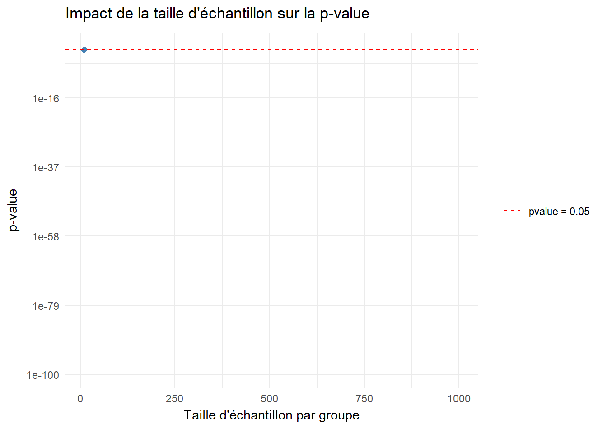
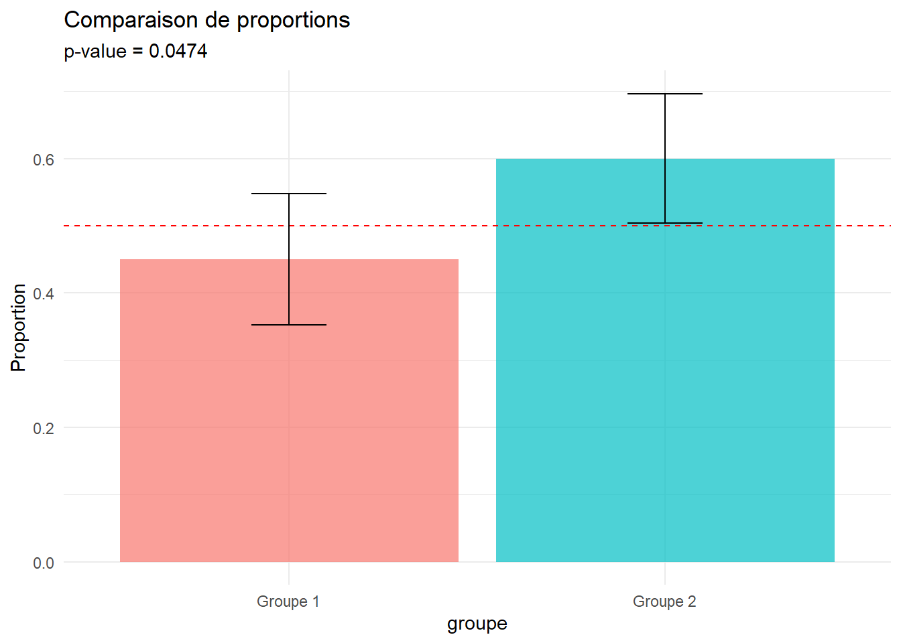
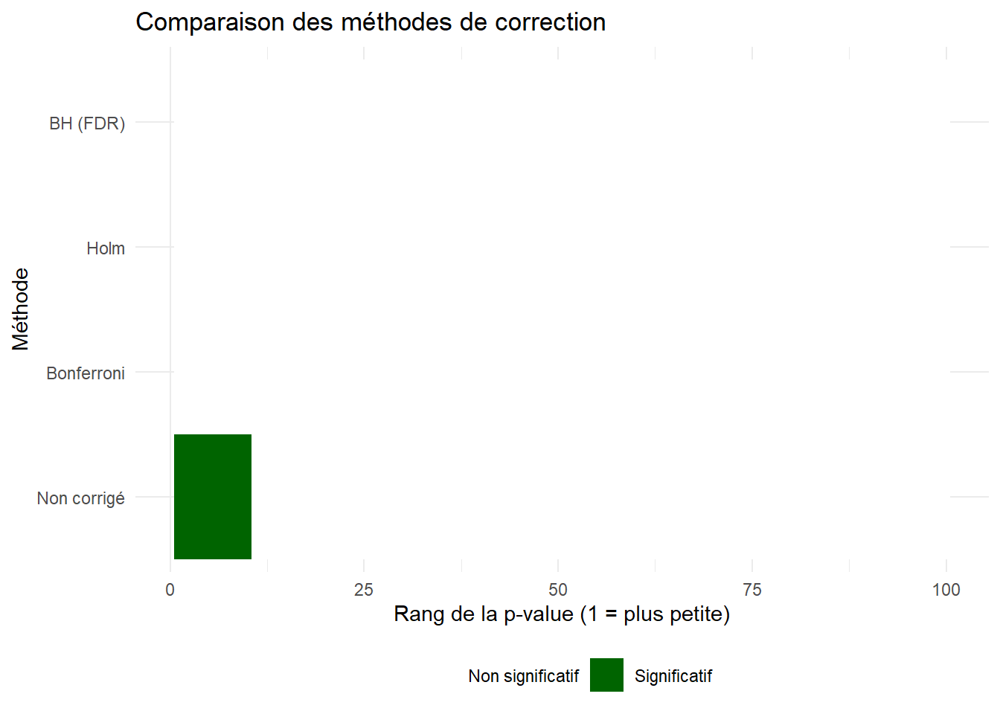
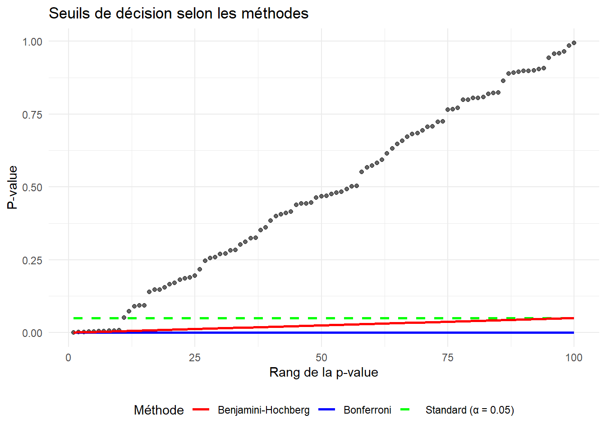

1 Théorie générale des tests statistiques
Le test d’hypothèse est un concept fondamental dans le monde scientifique. Un test d’hypothèse a pour but de présenter une règle de décision, établie à l’aide de résultats d’échantillon, permettant de d’effectuer un choix entre deux hypothèses statistiques.
1.1 Concepts fondamentaux
Qu’est-ce qu’une hypothèse statistique ? C’est une affirmation a priori sur une ou plusieurs caractéristiques d’une population telles que la valeur de paramètres, la distribution des observations.
Il existe deux types d’hypothèses :
Hypothèse nulle (H₀) : hypothèse soumise au test statistique et considérée comme vraie pour le test, H₀ est souvent un modèle simple ou bien une valeur définie d’un paramètre. Exemple, il n’y a pas de différence entre les moyennes de mes deux groupes, H₀ : µ₁ = µ2
Hypothèse alternative (H₁) : hypothèse différente de H₀, communément son opposé. Exemple H₁ : µ₁ ≠ µ2
Les erreurs de Type I et de Type II, qu’est-ce ?
- α l’erreur de Type I (ou risque de première espèce) : c’est la probabilité de rejeter H₀ alors que H₀ est vraie. Dit autrement, c’est le risque de conclure à tort, via les résultats obtenus, sur une différence réelle alors qu’elle est due au hasard. Exemple : un joueur joue à la roulette, il lance la roue 6 fois, il voit sortir 4 numéros rouges et 2 numéros noirs. Il en conclu qu’il y a deux fois plus de numéros rouges que de noirs.
- β l’erreur de Type II (ou risque de deuxième espèce) : c’est la probabilité de ne pas rejeter H₀ alors que H₀ est fausse. En autres, c’est le risque de conclure à tort qu’il n’y a pas de différence alors qu’il y a une différence réelle.
La puissance d’un test statistique, c’est la probabilité de rejeter H₀ lorsque H₀ est fausse. Elle se calcul ainsi : puissance = 1 - β

1.2 Test de Student (ou t test)
Le test de Student permet une comparaison simple mais importante, celle des moyennes entre deux groupes. La statistique de test est définie ainsi
\[ t = c \, \frac{\bar{m}_1 - \bar{m}_2}{s} \]
Où \(\bar{m}_1\) et \(\bar{m}_2\) sont les moyennes respectives des deux groupes, \(c\) est une constante dépendante de la taille d’échantillon, \(s^{2}\) est l’estimateur sans biais de la variance globale. \[ \bar{m}_1 = \frac{1}{n_1} \sum_{i=1}^{n_1} x_{1,i} \qquad \bar{m}_2 = \frac{1}{n_2} \sum_{i=1}^{n_2} x_{2,i} \]
\(s_1^2\) et \(s_2^2\) sont les estimateurs sans biais de la variance intra-groupe.
\[ s_1^2 = \frac{1}{n_1 - 1} \sum_{i=1}^{n_1} (x_{1,i} - \bar{m}_1)^2 \qquad s_2^2 = \frac{1}{n_2 - 1} \sum_{i=1}^{n_2} (x_{2,i} - \bar{m}_2)^2 \]
\[ s = \sqrt{ \frac{(n_1 - 1)s_1^2 + (n_2 - 1)s_2^2} {n_1 + n_2 - 2} } \]
\[ c = \sqrt{\frac{n_1 n_2}{n_1 + n_2}} \]
1.2.1 Test de Student à deux échantillons indépendants
Compare les moyennes de deux groupes indépendants : trt2 (n=10) et crtl (n=10).

tt <- with(exemple_data,
t.test(weight[group =="ctrl"],
weight[group =="trt2"],
var.equal = TRUE))
tt
Two Sample t-test
data: weight[group == "ctrl"] and weight[group == "trt2"]
t = -2.134, df = 18, p-value = 0.04685
alternative hypothesis: true difference in means is not equal to 0
95 percent confidence interval:
-0.980338117 -0.007661883
sample estimates:
mean of x mean of y
5.032 5.526 On observe une différence entre mes deux groupes de faible échantillon, que ce passerait-il si on augmente artificiellement la taille d’échantillon en dupliquant les données ? Je conserve le même groupe

data_k <- exemple_data %>%
slice(rep(row_number(), times = 10))
tt_10 <- with(
data_k,
t.test(
weight[group == "ctrl"],
weight[group == "trt2"],
var.equal = TRUE
)
)
tt_10
Two Sample t-test
data: weight[group == "ctrl"] and weight[group == "trt2"]
t = -7.0777, df = 198, p-value = 2.483e-11
alternative hypothesis: true difference in means is not equal to 0
95 percent confidence interval:
-0.6316394 -0.3563606
sample estimates:
mean of x mean of y
5.032 5.526 Dans cet exemple j’ai dupliqué dix fois le jeu de données, on peut voir que les moyennes sont identiques mais que la pvalue associée est bien plus basse :
- La puissance statistique associée au test de Student est dépendante de la taille d’échantillon. Plus le nombre d’observations est élevé, plus les résultats seront significatifs.
1.3 Test de proportion
Teste si une proportion observée diffère d’une proportion théorique.
# Exemple: 55 succès sur 100 essais
# H₀: p = 0.5 vs H₁: p ≠ 0.5
resultat_prop <- prop.test(x = 55, n = 100, p = 0.5)
print(resultat_prop)
1-sample proportions test with continuity correction
data: 55 out of 100, null probability 0.5
X-squared = 0.81, df = 1, p-value = 0.3681
alternative hypothesis: true p is not equal to 0.5
95 percent confidence interval:
0.4475426 0.6485719
sample estimates:
p
0.55 # Test de comparaison de deux proportions
# Groupe 1: 45/100, Groupe 2: 60/100
resultat_prop2 <- prop.test(x = c(45, 60), n = c(100, 100))
print(resultat_prop2)
2-sample test for equality of proportions with continuity correction
data: c(45, 60) out of c(100, 100)
X-squared = 3.9298, df = 1, p-value = 0.04744
alternative hypothesis: two.sided
95 percent confidence interval:
-0.296847038 -0.003152962
sample estimates:
prop 1 prop 2
0.45 0.60 # Visualisation
prop_data <- data.frame(
groupe = c("Groupe 1", "Groupe 2"),
proportion = c(45/100, 60/100),
n = c(100, 100)
)
ggplot(prop_data, aes(x = groupe, y = proportion, fill = groupe)) +
geom_bar(stat = "identity", alpha = 0.7) +
geom_hline(yintercept = 0.5, linetype = "dashed", color = "red") +
geom_errorbar(aes(ymin = proportion - 1.96*sqrt(proportion*(1-proportion)/n),
ymax = proportion + 1.96*sqrt(proportion*(1-proportion)/n)),
width = 0.2) +
labs(title = "Comparaison de proportions",
subtitle = paste("p-value =", round(resultat_prop2$p.value, 4)),
y = "Proportion") +
theme_minimal() +
theme(legend.position = "none")
1.4 Test de Wilcoxon
Test non-paramétrique alternatif au test t (ne suppose pas la normalité).
1.4.1 Test de Mann-Whitney (Wilcoxon pour deux échantillons indépendants)
groupe_X <- rexp(30, rate = 0.1)
groupe_Y <- rexp(30, rate = 0.08)
resultat_mw <- wilcox.test(groupe_X, groupe_Y)
print(resultat_mw)
Wilcoxon rank sum exact test
data: groupe_X and groupe_Y
W = 348, p-value = 0.1342
alternative hypothesis: true location shift is not equal to 0# Visualisation
donnees_mw <- data.frame(
valeur = c(groupe_X, groupe_Y),
groupe = rep(c("Groupe X", "Groupe Y"), each = 30)
)
ggplot(donnees_mw, aes(x = groupe, y = valeur, fill = groupe)) +
geom_violin(alpha = 0.7) +
geom_boxplot(width = 0.2, fill = "white") +
labs(title = "Test de Mann-Whitney",
subtitle = paste("p-value =", round(resultat_mw$p.value, 4)),
y = "Valeurs") +
theme_minimal() +
theme(legend.position = "none")
2 Multiplicité des tests
Lorsqu’on effectue plusieurs tests simultanément, le risque d’erreur de type I (faux positif) augmente.
# Simulation du problème
n_tests <- 20
p_values <- replicate(1000, {
sapply(1:n_tests, function(i) {
x <- rnorm(30)
y <- rnorm(30)
t.test(x, y)$p.value
})
})
# Proportion de fois où au moins un test est significatif (α = 0.05)
prop_au_moins_un <- mean(apply(p_values < 0.05, 2, any))
cat("Avec", n_tests, "tests et α = 0.05:\n")Avec 20 tests et α = 0.05:cat("Probabilité d'au moins un faux positif:", round(prop_au_moins_un, 3), "\n")Probabilité d'au moins un faux positif: 0.639 cat("Valeur théorique: 1 - (1-0.05)^20 =", round(1 - (1-0.05)^n_tests, 3), "\n")Valeur théorique: 1 - (1-0.05)^20 = 0.642 2.1 Family-Wise Error Rate (FWER)
Probabilité de faire au moins une erreur de type I parmi tous les tests.
FWER = P(au moins un faux positif)
2.2 False Discovery Rate (FDR)
Proportion attendue de faux positifs parmi les découvertes significatives.
FDR = E(V/R) où V = nombre de faux positifs, R = nombre de rejets
2.3 Corrections pour tests multiples
# Générer des p-values de test
set.seed(123)
n_tests <- 100
# 90 vrais H₀ (non significatifs) et 10 vrais H₁ (significatifs)
p_vals <- c(
runif(90, 0.05, 1), # vrais négatifs
runif(10, 0, 0.01) # vrais positifs
)
p_vals <- sample(p_vals) # mélanger2.3.1 Correction de Bonferroni
Contrôle strictement le FWER en divisant α par le nombre de tests.
α_corrigé = α / m où m = nombre de tests
alpha <- 0.05
bonf_threshold <- alpha / n_tests
cat("Seuil de Bonferroni:", bonf_threshold, "\n")Seuil de Bonferroni: 5e-04 cat("Tests significatifs (non corrigé):", sum(p_vals < alpha), "\n")Tests significatifs (non corrigé): 10 cat("Tests significatifs (Bonferroni):", sum(p_vals < bonf_threshold), "\n")Tests significatifs (Bonferroni): 0 # Avec p.adjust
p_bonf <- p.adjust(p_vals, method = "bonferroni")
cat("Tests significatifs (p.adjust):", sum(p_bonf < alpha), "\n")Tests significatifs (p.adjust): 0 2.3.2 Correction de Holm (Bonferroni séquentielle)
Version moins conservative de Bonferroni.
p_holm <- p.adjust(p_vals, method = "holm")
cat("Tests significatifs (Holm):", sum(p_holm < alpha), "\n")Tests significatifs (Holm): 0 2.3.3 False Discovery Rate (Benjamini-Hochberg)
Contrôle le FDR au lieu du FWER, plus puissant pour les tests multiples.
p_fdr <- p.adjust(p_vals, method = "BH")
cat("Tests significatifs (FDR/BH):", sum(p_fdr < alpha), "\n")Tests significatifs (FDR/BH): 0 2.3.4 Comparaison des méthodes
# Créer un tableau comparatif
comparaison <- data.frame(
p_value = p_vals,
rang = rank(p_vals),
non_corrige = p_vals < alpha,
bonferroni = p_bonf < alpha,
holm = p_holm < alpha,
BH_FDR = p_fdr < alpha
)
# Résumé
resume <- data.frame(
Methode = c("Non corrigé", "Bonferroni", "Holm", "BH (FDR)"),
Significatifs = c(
sum(comparaison$non_corrige),
sum(comparaison$bonferroni),
sum(comparaison$holm),
sum(comparaison$BH_FDR)
)
)
print(resume) Methode Significatifs
1 Non corrigé 10
2 Bonferroni 0
3 Holm 0
4 BH (FDR) 0# Visualisation
comparaison_long <- comparaison %>%
select(rang, non_corrige, bonferroni, holm, BH_FDR) %>%
pivot_longer(-rang, names_to = "methode", values_to = "significatif") %>%
mutate(methode = factor(methode,
levels = c("non_corrige", "bonferroni", "holm", "BH_FDR"),
labels = c("Non corrigé", "Bonferroni", "Holm", "BH (FDR)")))
ggplot(comparaison_long, aes(x = rang, y = methode, fill = significatif)) +
geom_tile() +
scale_fill_manual(values = c("white", "darkgreen"),
labels = c("Non significatif", "Significatif")) +
labs(title = "Comparaison des méthodes de correction",
x = "Rang de la p-value (1 = plus petite)",
y = "Méthode",
fill = "") +
theme_minimal() +
theme(legend.position = "bottom")
2.3.5 Visualisation des seuils de décision
# Créer un dataframe pour la visualisation
df_viz <- data.frame(
rang = 1:n_tests,
p_value = sort(p_vals)
) %>%
mutate(
seuil_standard = alpha,
seuil_bonferroni = alpha / n_tests,
seuil_BH = (rang / n_tests) * alpha
)
ggplot(df_viz, aes(x = rang)) +
geom_point(aes(y = p_value), alpha = 0.6) +
geom_line(aes(y = seuil_standard, color = "Standard (α = 0.05)"),
size = 1, linetype = "dashed") +
geom_line(aes(y = seuil_bonferroni, color = "Bonferroni"),
size = 1) +
geom_line(aes(y = seuil_BH, color = "Benjamini-Hochberg"),
size = 1) +
scale_color_manual(values = c("red", "blue", "green")) +
labs(title = "Seuils de décision selon les méthodes",
x = "Rang de la p-value",
y = "P-value",
color = "Méthode") +
theme_minimal() +
theme(legend.position = "bottom")Warning: Using `size` aesthetic for lines was deprecated in ggplot2 3.4.0.
ℹ Please use `linewidth` instead.
2.4 Recommandations pratiques
2.4.1 Choix de la méthode
| Situation | Méthode recommandée |
|---|---|
| Nombre limité de tests (< 10) | Bonferroni |
| Besoin de contrôle strict du FWER | Bonferroni ou Holm |
| Grand nombre de tests | FDR (Benjamini-Hochberg) |
| Exploration de données | FDR (Benjamini-Hochberg) |
| Confirmation d’hypothèses | Bonferroni |
2.4.2 Code récapitulatif
# Fonction pour comparer toutes les méthodes
comparer_corrections <- function(p_values, alpha = 0.05) {
data.frame(
Methode = c("Non corrigé", "Bonferroni", "Holm", "Hochberg",
"Hommel", "BH (FDR)", "BY (FDR)"),
Significatifs = c(
sum(p_values < alpha),
sum(p.adjust(p_values, "bonferroni") < alpha),
sum(p.adjust(p_values, "holm") < alpha),
sum(p.adjust(p_values, "hochberg") < alpha),
sum(p.adjust(p_values, "hommel") < alpha),
sum(p.adjust(p_values, "BH") < alpha),
sum(p.adjust(p_values, "BY") < alpha)
)
)
}
# Exemple d'utilisation
comparer_corrections(p_vals) Methode Significatifs
1 Non corrigé 10
2 Bonferroni 0
3 Holm 0
4 Hochberg 0
5 Hommel 0
6 BH (FDR) 0
7 BY (FDR) 03 Relation entre puissance, taille d’échantillon, taille d’effet et alpha
4 Conclusion
- Les tests d’hypothèses permettent de prendre des décisions statistiques
- Le test t est paramétrique et suppose la normalité
- Le test de Wilcoxon est une alternative non-paramétrique robuste
- Les tests de proportion sont utilisés pour les données binaires
- La correction pour tests multiples est essentielle pour éviter les faux positifs
- FWER contrôle la probabilité de toute erreur (strict)
- FDR contrôle la proportion d’erreurs (plus puissant)
- Bonferroni: simple mais conservateur
- Benjamini-Hochberg (FDR): équilibre entre puissance et contrôle